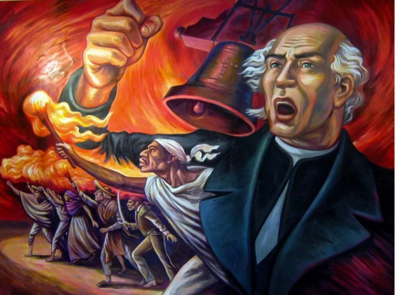

Grito de Independencia, la ceremonia donde se recuerda el llamado que hizo Miguel Hidalgo en 1810.
El 15 de septiembre en México es el Grito de Independencia, el festejo cívico y cultural más grande del país que marca el inicio de la lucha por la emancipación de la corona española.
¿Qué sucedió realmente?
Históricamente, el levantamiento armado no ocurrió la noche del 15 de septiembre, sino durante la madrugada del 16 de septiembre de 1810. Al verse descubierta la Conspiración de Querétaro, el cura Miguel Hidalgo y Costilla, acompañado por Ignacio Allende y Juan Aldama, convocó al pueblo en la parroquia de Dolores, Guanajuato, haciendo sonar las campanas para levantarse en armas contra el virreinato de la Nueva España. Aunque el proceso de guerra duró 11 años, este instante se consagró como el nacimiento espiritual de la nación.
Mitos y Curiosidades
- El mito del cumpleaños de Porfirio Díaz: Existe la creencia popular de que el festejo se movió al 15 de septiembre porque el presidente Porfirio Díaz quería hacerlo coincidir con su cumpleaños. Si bien Díaz consolidó el gran espectáculo en el Zócalo en el Centenario de 1910, la realidad es que desde la década de 1840 (cuando Díaz era un niño) ya se acostumbraba festejar desde la noche del 15 con serenatas y fuegos artificiales para esperar la llegada del día 16.
- Hidalgo no gritó "¡Viva México!": La frase que hoy repiten gobernantes y ciudadanos no existía en 1810 porque el concepto de "México" como país independiente aún no se definía. De acuerdo con testigos como Juan Aldama, la arenga original fue en apoyo al rey Fernando VII (quien había sido destronado por Napoleón Bonaparte) y decía algo parecido a: "¡Viva la religión! ¡Viva nuestra Madre Santísima de Guadalupe! ¡Viva Fernando VII! ¡Muera el mal gobierno!".
- Él no tocó la campana: El cura Miguel Hidalgo no tiró de las cuerdas de la campana de la parroquia. Quien realmente la hizo sonar para reunir a la gente fue José Galván, el campanero oficial del templo, mientras Hidalgo arengaba a la multitud desde la entrada.
|

|